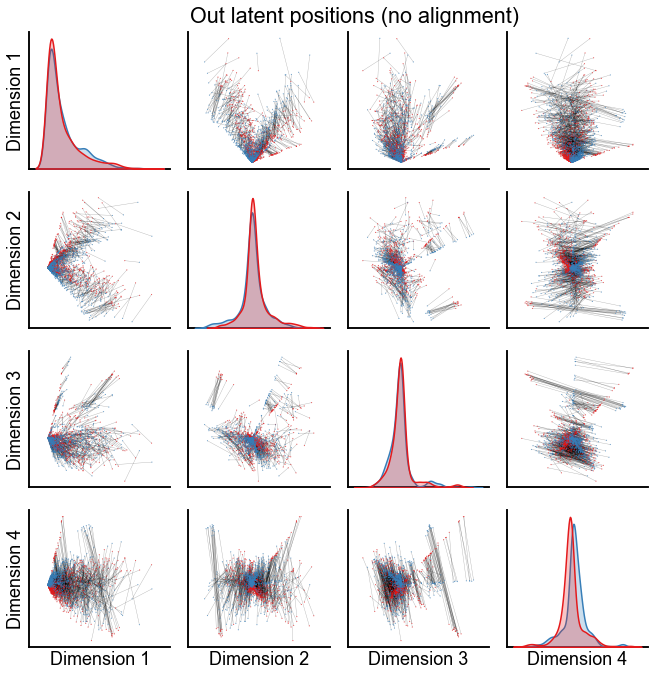
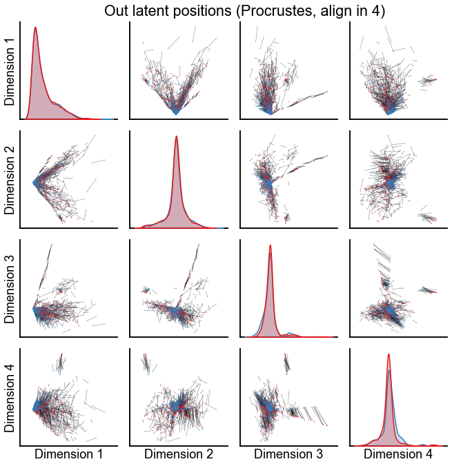
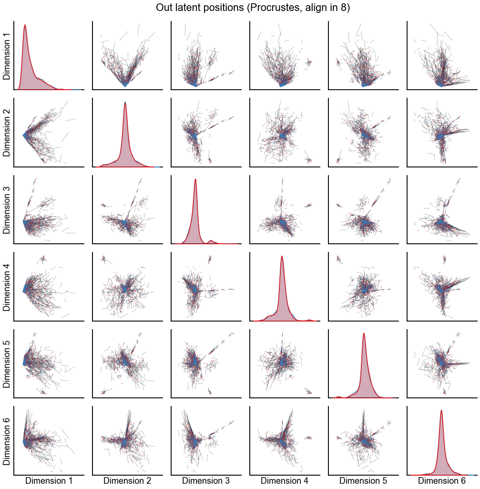
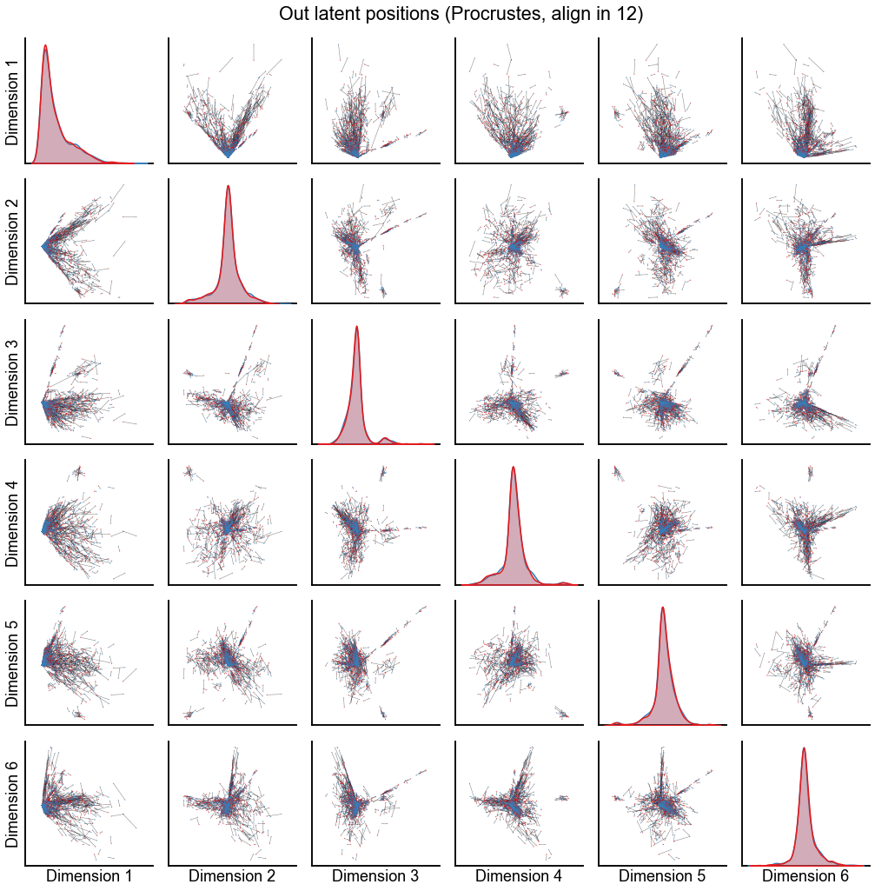
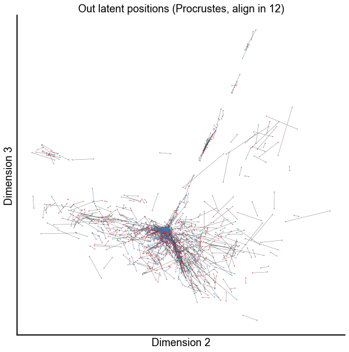

Look at the paired embeddings¶
Preliminaries¶
from pkg.utils import set_warnings
import datetime
import time
import matplotlib.pyplot as plt
import numpy as np
import seaborn as sns
from graspologic.align import OrthogonalProcrustes, SeedlessProcrustes
from graspologic.embed import (
AdjacencySpectralEmbed,
OmnibusEmbed,
select_dimension,
)
from graspologic.match import GraphMatch
from graspologic.plot import pairplot
from graspologic.utils import (
augment_diagonal,
binarize,
multigraph_lcc_intersection,
pass_to_ranks,
)
from pkg.data import load_maggot_graph, load_palette
from pkg.io import savefig
from pkg.plot import set_theme
from src.visualization import adjplot # TODO fix graspologic version and replace here
t0 = time.time()
def stashfig(name, **kwargs):
foldername = "paired_embeddings"
savefig(name, foldername=foldername, **kwargs)
colors = sns.color_palette("Set1")
palette = dict(zip(["Left", "Right"], colors))
set_theme()
Load and process data¶
mg = load_maggot_graph()
mg = mg[mg.nodes["paper_clustered_neurons"]]
ll_mg, rr_mg, lr_mg, rl_mg = mg.bisect(paired=True)
ll_adj = ll_mg.sum.adj.copy()
rr_adj = rr_mg.sum.adj.copy()
nodes = ll_mg.nodes
nodes["_inds"] = range(len(nodes))
sorted_nodes = nodes.sort_values(["simple_group"])
sort_inds = sorted_nodes["_inds"]
ll_adj = ll_adj[np.ix_(sort_inds, sort_inds)]
rr_adj = rr_adj[np.ix_(sort_inds, sort_inds)]
adjs, lcc_inds = multigraph_lcc_intersection([ll_adj, rr_adj], return_inds=True)
ll_adj = adjs[0]
rr_adj = adjs[1]
print(f"{len(lcc_inds)} in intersection of largest connected components.")
1144 in intersection of largest connected components.
Embed¶
Run the initial embedding using ASE¶
def embed(adj, n_components=40, ptr=False):
if ptr:
adj = pass_to_ranks(adj)
elbow_inds, elbow_vals = select_dimension(augment_diagonal(adj), n_elbows=4)
elbow_inds = np.array(elbow_inds)
ase = AdjacencySpectralEmbed(n_components=n_components)
out_latent, in_latent = ase.fit_transform(adj)
return out_latent, in_latent, ase.singular_values_, elbow_inds
def preprocess_for_embed(ll_adj, rr_adj, preprocess):
if "binarize" in preprocess:
ll_adj_to_embed = binarize(ll_adj)
rr_adj_to_embed = binarize(rr_adj)
if "rescale" in preprocess:
ll_norm = np.linalg.norm(ll_adj_to_embed, ord="fro")
rr_norm = np.linalg.norm(rr_adj_to_embed, ord="fro")
mean_norm = (ll_norm + rr_norm) / 2
ll_adj_to_embed *= mean_norm / ll_norm
rr_adj_to_embed *= mean_norm / rr_norm
return ll_adj_to_embed, rr_adj_to_embed
n_components = 8
max_n_components = 40
preprocess = ["binarize", "rescale"]
ll_adj_to_embed, rr_adj_to_embed = preprocess_for_embed(ll_adj, rr_adj, preprocess)
left_out, left_in, left_sing_vals, left_elbow_inds = embed(
ll_adj_to_embed, n_components=max_n_components
)
right_out, right_in, right_sing_vals, right_elbow_inds = embed(
rr_adj_to_embed, n_components=max_n_components
)
Plot screeplots¶
def screeplot(sing_vals, elbow_inds, color=None, ax=None, label=None):
if ax is None:
_, ax = plt.subplots(1, 1, figsize=(8, 4))
plt.plot(range(1, len(sing_vals) + 1), sing_vals, color=color, label=label)
plt.scatter(
elbow_inds, sing_vals[elbow_inds - 1], marker="x", s=50, zorder=10, color=color
)
ax.set(ylabel="Singular value", xlabel="Index")
return ax
fig, ax = plt.subplots(1, 1, figsize=(8, 4))
screeplot(left_sing_vals, left_elbow_inds, color=palette["Left"], ax=ax, label="Left")
screeplot(
right_sing_vals, right_elbow_inds, color=palette["Right"], ax=ax, label="Right"
)
ax.legend()
ax.axvline(n_components, color="black", linewidth=1.5, linestyle="--")
stashfig(f"screeplot-preprocess={preprocess}")
Plot the latent positions without alignment¶
from matplotlib.collections import LineCollection
def add_connections(x1, x2, y1, y2, color="black", alpha=0.2, linewidth=0.2, ax=None):
x1 = np.array(x1)
x2 = np.array(x2)
y1 = np.array(y1)
y2 = np.array(y2)
if ax is None:
ax = plt.gca()
coords = []
for i in range(len(x1)):
coords.append([[x1[i], y1[i]], [x2[i], y2[i]]])
lc = LineCollection(
coords,
colors=color,
linewidths=linewidth,
alpha=alpha,
zorder=0,
)
ax.add_collection(lc)
def plot_latents(left, right, title="", n_show=4, alpha=0.3, linewidth=0.4):
if n_show > left.shape[1]:
n_show = left.shape[1]
plot_data = np.concatenate([left, right], axis=0)
labels = np.array(["Left"] * len(left) + ["Right"] * len(right))
pg = pairplot(plot_data[:, :n_show], labels=labels, title=title, size=5)
axs = pg.axes
for i in range(n_show):
for j in range(n_show):
if i != j:
ax = axs[i, j]
add_connections(
left[:, j],
right[:, j],
left[:, i],
right[:, i],
ax=ax,
alpha=alpha,
linewidth=linewidth,
)
pg._legend.remove()
return pg
pg = plot_latents(left_out, right_out, title="Out latent positions (no alignment)")
stashfig(f"out-latent-no-align-preprocess={preprocess}")

Align the embeddings using known pairs¶
def run_alignments(X, Y, scale=False):
X = X.copy()
Y = Y.copy()
if scale:
X_norm = np.linalg.norm(X, ord="fro")
Y_norm = np.linalg.norm(Y, ord="fro")
avg_norms = (X_norm + Y_norm) / 2
X = X * (avg_norms / X_norm)
Y = Y * (avg_norms / Y_norm)
op = OrthogonalProcrustes()
X_trans_op = op.fit_transform(X, Y)
sp = SeedlessProcrustes(init="custom", initial_Q=op.Q_)
X_trans_sp = sp.fit_transform(X, Y)
return X_trans_op, X_trans_sp
def calc_diff_norm(X, Y):
return np.linalg.norm(X - Y, ord="fro")
n_components = 3 # this was a small dimension where we reject
op_known_left_out, sp_known_left_out = run_alignments(
left_out[:, :n_components], right_out[:, :n_components]
)
Plot the results from aligning in various dimensions¶
n_show = 6
for n_components in [4, 8, 12]:
op_known_left_out, sp_known_left_out = run_alignments(
left_out[:, :n_components], right_out[:, :n_components]
)
plot_latents(
op_known_left_out,
right_out[:, :n_components],
f"Out latent positions (Procrustes, align in {n_components})",
n_show=n_show,
alpha=0.5,
linewidth=0.5,
)
stashfig(f"out-latent-op-known-preprocess={preprocess}-n_components={n_components}")



Zoom in on the first few dimensions for the \(d=12\) alignment¶
from giskard.plot import simple_scatterplot
def plot_latents(left, right, title="", show=4, alpha=0.3, linewidth=0.4):
if isinstance(show, int):
n_show = show
if n_show > left.shape[1]:
n_show = left.shape[1]
plot_data = np.concatenate([left, right], axis=0)
labels = np.array(["Left"] * len(left) + ["Right"] * len(right))
if isinstance(show, int) and n_show > 2:
pg = pairplot(plot_data[:, :n_show], labels=labels, title=title, size=5)
pg._legend.remove()
axs = pg.axes
for i in range(n_show):
for j in range(n_show):
if i != j:
ax = axs[i, j]
add_connections(
left[:, j],
right[:, j],
left[:, i],
right[:, i],
ax=ax,
alpha=alpha,
linewidth=linewidth,
)
return pg
else:
ax = simple_scatterplot(
plot_data[:, show], labels=labels, palette=palette, s=3, spines_off=False
)
add_connections(
left[:, show[0]],
right[:, show[0]],
left[:, show[1]],
right[:, show[1]],
ax=ax,
alpha=alpha,
linewidth=linewidth,
)
ax.set(
xlabel=f"Dimension {show[0]+1}",
ylabel=f"Dimension {show[1]+1}",
title=title,
)
return ax
dims = (0, 1)
plot_latents(
op_known_left_out,
right_out[:, :n_components],
f"Out latent positions (Procrustes, align in {n_components})",
show=dims,
alpha=0.5,
linewidth=0.5,
)
stashfig(f"paired-embed-dim{dims[0]}-dim{dims[1]}")
dims = (0, 2)
plot_latents(
op_known_left_out,
right_out[:, :n_components],
f"Out latent positions (Procrustes, align in {n_components})",
show=dims,
alpha=0.5,
linewidth=0.5,
)
stashfig(f"paired-embed-dim{dims[0]}-dim{dims[1]}")
dims = (1, 2)
plot_latents(
op_known_left_out,
right_out[:, :n_components],
f"Out latent positions (Procrustes, align in {n_components})",
show=dims,
alpha=0.5,
linewidth=0.5,
)
stashfig(f"paired-embed-dim{dims[0]}-dim{dims[1]}")
dims = (0, 3)
plot_latents(
op_known_left_out,
right_out[:, :n_components],
f"Out latent positions (Procrustes, align in {n_components})",
show=dims,
alpha=0.5,
linewidth=0.5,
)
stashfig(f"paired-embed-dim{dims[0]}-dim{dims[1]}")
dims = (1, 3)
plot_latents(
op_known_left_out,
right_out[:, :n_components],
f"Out latent positions (Procrustes, align in {n_components})",
show=dims,
alpha=0.5,
linewidth=0.5,
)
stashfig(f"paired-embed-dim{dims[0]}-dim{dims[1]}")
dims = (2, 3)
plot_latents(
op_known_left_out,
right_out[:, :n_components],
f"Out latent positions (Procrustes, align in {n_components})",
show=dims,
alpha=0.5,
linewidth=0.5,
)
stashfig(f"paired-embed-dim{dims[0]}-dim{dims[1]}")


End¶
elapsed = time.time() - t0
delta = datetime.timedelta(seconds=elapsed)
print("----")
print(f"Script took {delta}")
print(f"Completed at {datetime.datetime.now()}")
print("----")
----
Script took 0:01:56.082359
Completed at 2021-04-12 09:25:09.803563
----